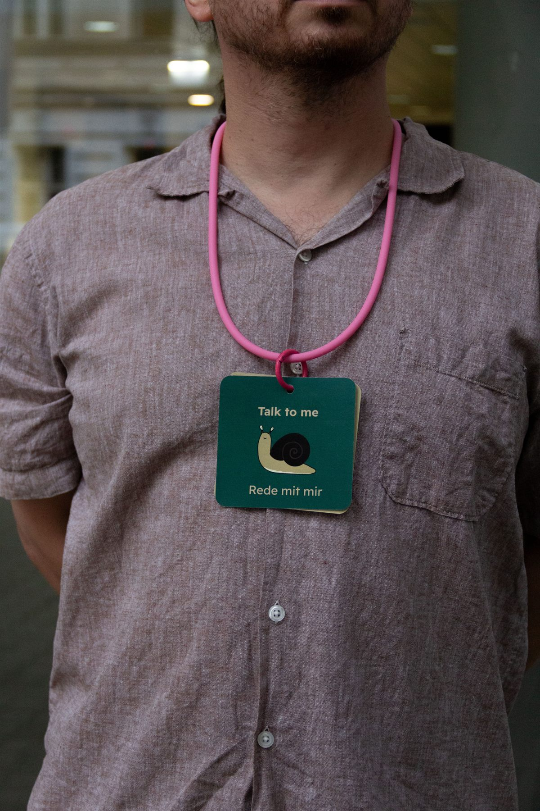
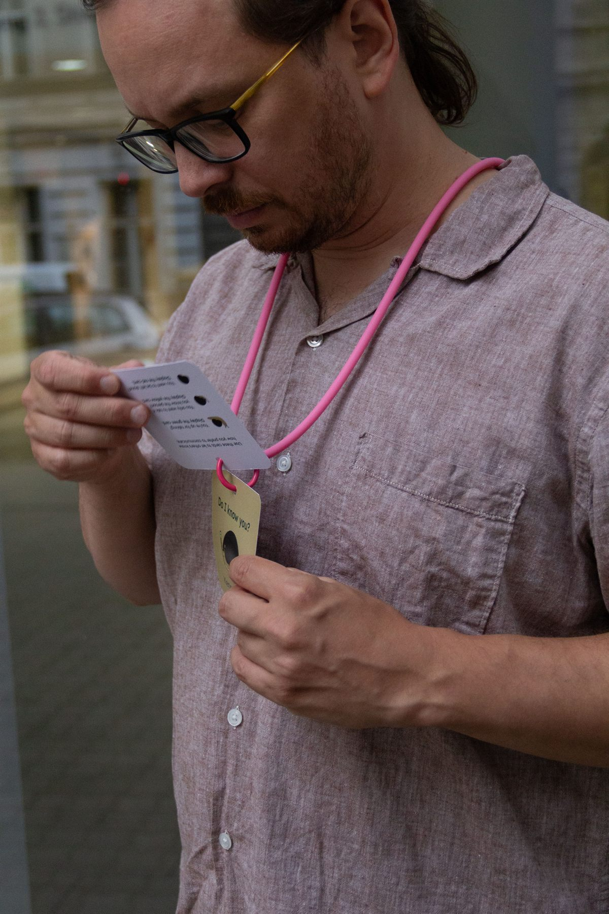
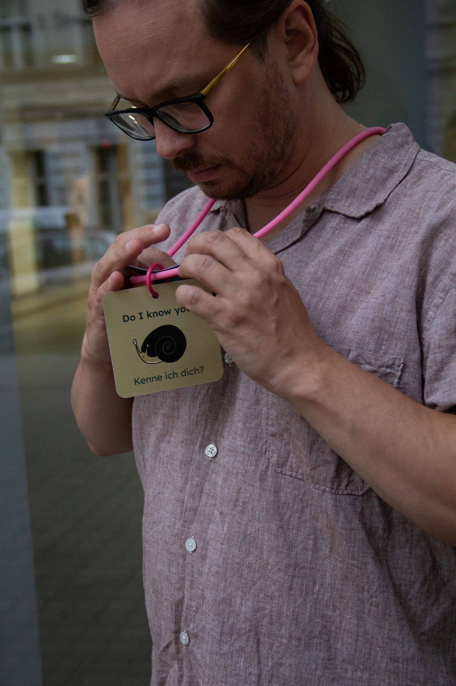
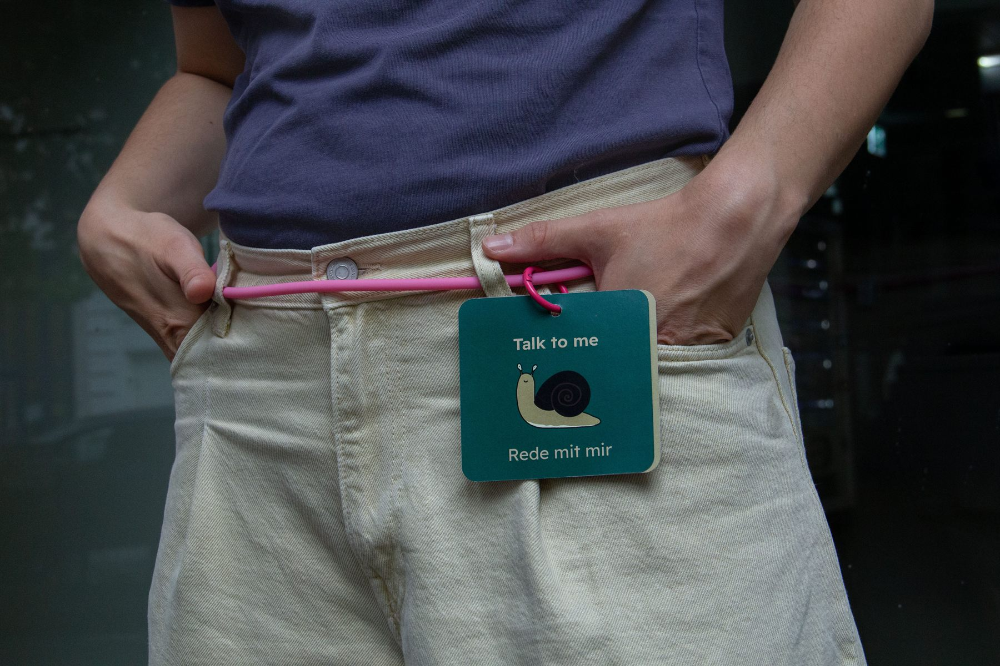
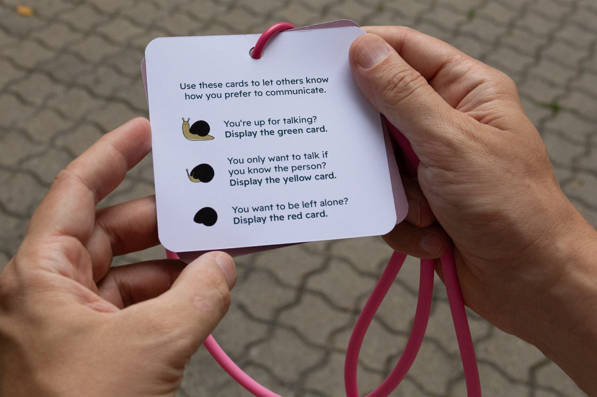

I’m a Vienna-based designer and researcher working on access in different forms: to spaces, to information, to materials. In my work I combine design methods, artistic strategies and creative research techniques, speculative design approaches and visual communication. My projects range from neuro-inclusive interventions and mental health awareness to developing situated relationships to material resources in urban space.
My practice has been shaped by work at renowned creative studios such as Superflux in London, where I contributed to films on the tangled networks of global technological infrastructure, and at The Invisible Lab in Graz, where I did design research, graphic design and UX/UI design for clients addressing groups of people with varying accessibility needs.
I develop and facilitate educational formats such as walks, workshops and talks for universities, festivals and conferences, including Urbanize! Festival, the University of Applied Arts Vienna, the CtrlZ.AI fair in Barcelona and the Wuhan Institute of Technology.
Snail Cards




